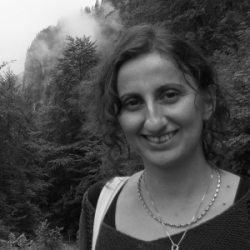

Architecting Next Generation of Ecosystems
Co-located with 23rd IEEE International Conference on Software Architecture (ICSA)
June 22-26, 2026, Amsterdam, Netherlands
Submission Details
Co-located with 23rd IEEE International Conference on Software Architecture (ICSA)
The 1st International Workshop on Architecting Next Generation of Ecosystems (ANGE) is the event co-located with 23rd IEEE International Conference on Software Architecture (ICSA).
With the advent of smart ecosystems such as smart cities, software systems are becoming increasingly interconnected and interdependent.
This introduces major architectural challenges amplified by rapid advances in AI, GenAI, and other emerging technologies, such as quantum computing.
The 1st International Workshop on Architecting Next Generation of Ecosystems (ANGE) focuses on advancing architectural principles, methods, and practices, emphasizing approaches that integrate AI, self-adaptation, and explainability.
ANGE also investigates how emerging technologies can support architecture-centric activities such as design-space exploration, decision-making, trade-off analysis, and automated validation.
It examines how architectural practices can embed qualities like transparency, accountability, resilience, and safety, while ensuring sustainability and evolvability over long lifecycles.
By bringing together academia and industry, ANGE seeks to consolidate knowledge, identify open research challenges, and chart a roadmap for architecting ecosystems that are adaptive, sustainable, and trustworthy.
1:30 – 1:45
Welcome and Opening
Alessio Bucaioni
1:45 – 2:30
Keynote: A reference architecture for ethical-aware autonomous systems
Martina De Sanctis
2:30 – 2:45
Advancing Decision Tree-based Online Inference for Edge Computing
Lorenzo Abate, Mario Barbareschi
2:45 – 3:00
RAD-AI: Rethinking Architecture Documentation for AI-Augmented Ecosystems
Oliver Larsen, Mahyar Tourchi Moghaddam
3:30 – 3:45
Expert Perspectives on Designing the Architecture of Software-Defined Electric Vehicles
Rodi Jolak, Christian Casanova, Efi Papatheocharous, Ellen Scott, Iraklis Symeonidis, Pontus Svenson
3:45 – 4:05
A Survey on Risk-Adaptive Approaches in Autonomous Ecosystems
Rui Zhang, David Halasz, Dimitri Van Landuyt
4:05 – 4:20
Towards Collecting Large-Scale Vehicular Sensor Data for Open Access
Benjamin Kämä, Olli Timonen, Nicklas Stafford, Jere Lotvonen, Otto Kalliokoski, Aleksi Kanerva, Prabhash Rathnayake, Sameera Gamage, Aleksi Vuorinen, Siva Ariram, Ekaterina Gilman, Ella Peltonen
4:20 – 4:35
Evolvable Knowledge Graph Demonstration for Route Planning: Learning Through Utilization
Anna Teern, Hassan Khattak, Syed Jawad Akhtar, Nada Elgendy, Pertti Seppänen, Tero Päivärinta
TBD

Assistant Professor
Gran Sasso Science Institute (GSSI), Italy
Computer Science Scientific Area
Abstract. Autonomous systems, whether AI-enabled or not, are becoming pervasive across domains such as healthcare, assistive technologies, and social robotics. While their growing adoption enables new capabilities, it also raises critical ethical challenges, especially in scenarios where systems interact and collaborate closely with humans. Addressing these challenges requires rethinking software architecture as a key enabler of responsible and trustworthy system behavior.
In this talk, she will present a reference architecture for ethical-aware autonomous systems, designed to support diverse forms of human-system interaction, including proactive, reactive, and passive behaviors. The architecture is grounded in a comprehensive analysis of scientific literature, ethical guidelines, and existing laws and regulations, and has been validated through expert interviews and scenario-based evaluation. The proposed architecture supports software engineers in embedding ethical reasoning and safeguards into autonomous and intelligent systems, enabling them to operate in ethically sensitive contexts while respecting individual, societal, and environmental values.
Authors are invited to submit:
Both, short papers (not more than 6 pages,including references) and full papers (not more than 8 pages, including references) are welcome.
Contributions must be written in English and adhere to the IEEE Computer Society two-column camera-ready format.
All submissions are single-anonymous and will be reviewed by at least three PC members who are expert or have been experiencing in the related field.
Accepted papers will be published as workshop proceedings in IEEEXplore.
A best paper award will be granted, based on reviewers’ recommendations and the paper’s impact on workshop discussions.
We are currently working for a special issue on a prestigious journal, to allow selected best papers to submit an extended version of their work.
Please note that ICSA and therefore the ANGE workshop are IN-PERSON events.
At least one author of each accepted paper must register to the conference and physically present their work.
For further details, please refer to ICSA official website.
ANGE 2026 will be held at Vrije Universiteit Amsterdam. All the details for registration, accomodation and attending the conference are available on the main ICSA website.
In case of questions, contact us via an email to alessandra.somma@unina.it